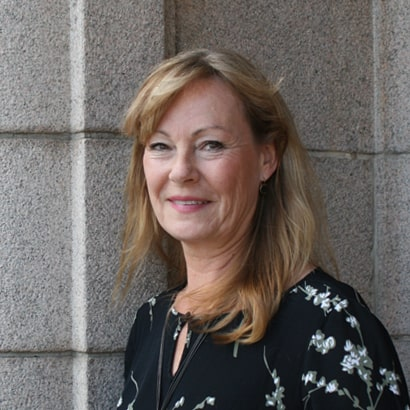
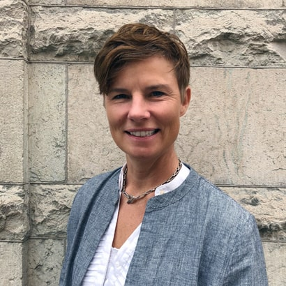
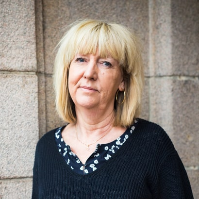
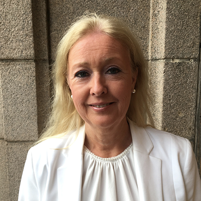
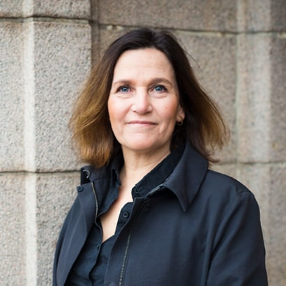
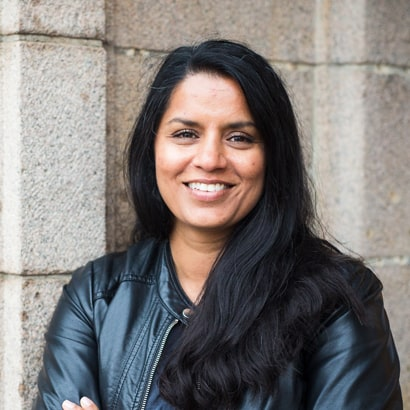
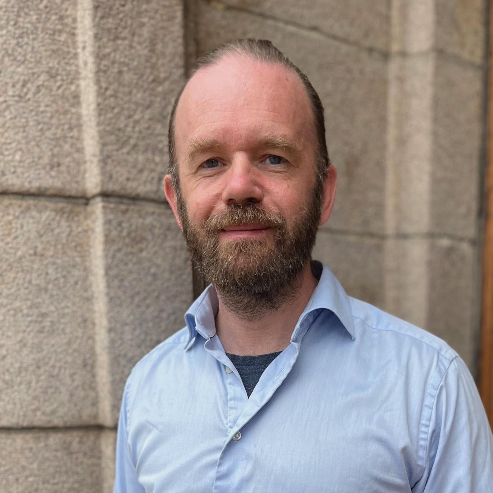
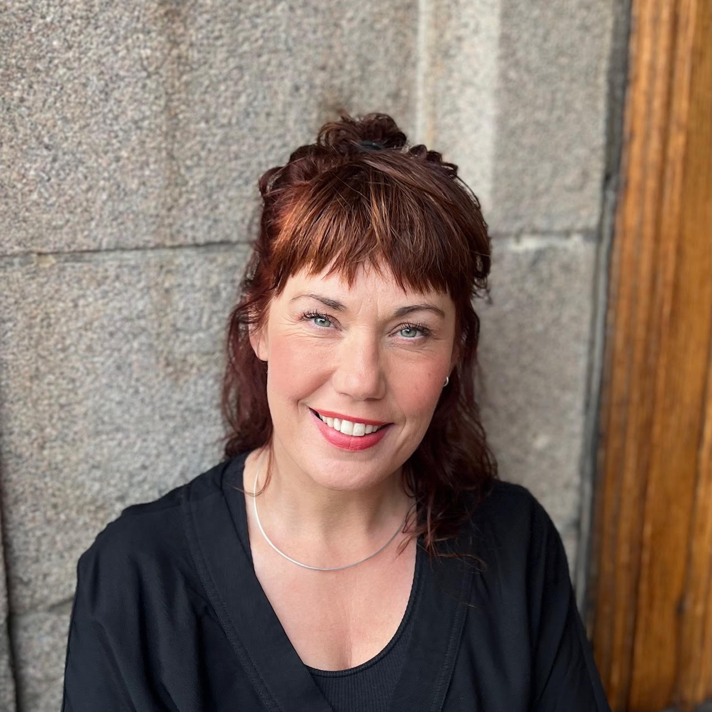

KBT & Parterapi
Anette Edsberger
Leg. sjukgymnast & leg. psykoterapeut KBT. Arbetar särskilt med stress/utmattning, ångest, självkänsla och parterapi (IBCT).
0709 28 68 78

Leg. sjukgymnast & leg. psykoterapeut KBT. Arbetar särskilt med stress/utmattning, ångest, självkänsla och parterapi (IBCT).
Leg. psykolog & leg. psykoterapeut KBT. Handledare med särskild kompetens inom ångest och tvångssyndrom (OCD).
Leg. psykolog & leg. psykoterapeut KBT, handledare i KBT, fil.dr. Arbetar med relationell KBT, parterapi och utbildning.

Leg. psykolog & leg. psykoterapeut KBT. Specialiserad i parterapi (IBCT), sexologi samt stress/utmattning med ACT/FACT.

Leg. sjuksköterska & leg. psykoterapeut KBT. Lång erfarenhet av ångest, depression, ätstörningar samt undervisning/handledning.

Leg. psykolog & leg. psykoterapeut KBT. Specialist i klinisk psykologi. Erfaren inom neuropsykologi, trauma och stress/utmattning.

Leg. psykolog & leg. psykoterapeut KBT. Specialist i psykologisk behandling. Arbetar med ungdomar, självkänsla, utmattning och handledning.
Leg. psykoterapeut KBT, leg. hälso- och sjukvårdskurator, auktoriserad socionom. Särskild erfarenhet av stress, utmattning och livskriser.

Socionom, leg. psykoterapeut KBT, handledare. Arbetar med individer, par, adoption/familj samt chefs- och personalstöd.

Leg. psykolog med fokus på barn, unga, föräldrar och familjerelationer. Arbetar med KBT, ABFT och MI.

Leg. psykoterapeut KBT, socionom & legitimerad hälso- och sjukvårdskurator. Arbetar med sexologiska frågor, par, trauma och HBTQI.
Leg. psykoterapeut KBT, socionom & legitimerad hälso- och sjukvårdskurator. Särskild erfarenhet av..